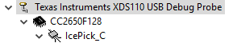

Debug Interfaces¶
The CC2640R2F platform supports the cJTAG (2-wire) and JTAG (4-wire) interfaces. Any debuggers that support cJTAG, like the TI XDS100v3 and XDS200, work natively. Others interfaces, like the IAR I-Jet and Segger J-Link, can only be used in JTAG mode but their drivers inject a cJTAG sequence which enables JTAG mode when connecting. The hardware resources included on the devices for debugging are listed as follows. Not all debugging functionality is available in all combinations of debugger and IDE.
- Breakpoint unit (FBP) – 6 instruction comparators, 2 literal comparators
- Data watchpoint unit (DWT) – 4 watchpoints on memory access
- Instrumentation Trace Module (ITM) – 32 × 32 bit stimulus registers
- Trace Port Interface Unit (TPIU) – serialization and time-stamping of DWT and ITM events
The SmartRF06 Board contains a XDS100v3 debug probe, and the CC2650 LaunchPad contains the XDS110 debug probe. These debuggers are used by default in the respective sample projects.
Connecting to the XDS Debugger¶
If only one debugger is attached, the IDE uses it automatically when you click
the  button in CCS or in IAR.
button in CCS or in IAR.
If multiple debuggers are connected, you must choose the individual debugger to use. The following steps detail how to select a debugger in CCS and IAR.
Configuring Debugger in CCS¶
When multiple debuggers are attached, and a CCS debugging session is started, CCS will prompt user to select the debugger to utilize.
To select a specific debugger in CCS for every session, do as follows:
Find Serial Number¶
To find the serial number for XDS110 or XDC 100v3 debuggers, do as follows.
- Open a command prompt.
- Run
C:\ti\ccsv6\ccs_base\common\uscif\xds100serial.exeto get a list of serial numbers of the connected debuggers.
For XDS110 debuggers (LaunchPads), run the following command: c:\ti\ccsv6\ccs_base\common\uscif\xds110\xdsdfu.exe -e
Configure Serial Number¶
|

|
|
|
|
 |
|

|
Configuring Debugger in IAR¶
To debug using IAR, do as follows.
- Open the project options (Project -> Options)
- Go to the Debugger entry.
- Go to Extra options.
- Add the following command line option:
--drv_communication=USB:#select
Adding this command line option makes the IAR prompt which debugger to use for every connection.